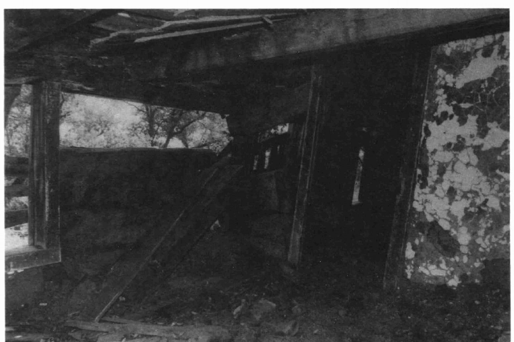

One of the seven brothers · Josef’s branch
Josef Kastl
1840–1921
Show in the family tree On the emigration timeline



What the book records
| Also written as | Joseph Kastlp. 41 p. 8 |
|---|---|
| Born | 15 January 1840, Všepadly, house No. 11, Bohemiap. 41 Chart, p. 14As printed
|
| Occupation | Stone mason in Omaha; worked for the Union Pacific Railroad building station houses through Nebraska and WyomingSupp. p. 3As printed
|
| Married | Dorota Blaha, 1863, Bohemiap. 41As printed
|
| Emigrated | Sailed from Bremen on the S.S. Berlin with his wife and two children; arrived at Baltimore 22 April 1868p. 41 p. 7As printed
|
| Homestead | Filed 20 June 1868 at Nebraska City, application No. 2069: E½ of SE¼, Section 4, Township 14 North, 80 acres, Newman Precinct, Saunders Countyp. 8 Supp. p. 3As printed
|
| Died | 1921p. 41 Chart, p. 14As printed
|
| Buried | Brainard, Nebraskap. 41 p. 7 |
Family
Parents
Thomas Kastl b. 1806 and Maria Marsalek d. 1853
Spouse
Dorota Blaha 1833–1919
Married 1863, Bohemia p. 41As printed
Josef Kastl married Dorota Blaha in 1863 in Bohemia.
— p. 41
Children
- Mathias Kastl 1864/1865–1868/1869
- Theresia Kastl 1866/1867–1868/1869
- Joseph Kastl 1869–1953
- Mary Kastl 1875–1947
Read the chapter in the book: p. 41.
From the book
When he returned to Omaha, he equipped a wagon pulled by a tean [sic] of oxen, and went to homestead west of Omaha, in Newman Precinct, Saunders County.
He proceeded to build a log cabin, but in the meantime lived with his wife in a nearby cave dug into the side of a hill.
A missionary priest on horseback would periodically visit Josef's cabin and say Mass, using a table that is still in the family.
July 6, 1875, in his final proof required under the homestead act, Joseph states he built a house of logs, 16x32, with two doors and four windows. The remains of this log house are still visible on the original site.
"The Kastl house, like many other Czech log houses that we have recorded, was one of the finest examples of the art of log building in the State of Nebraska. The Czechs were quite skilled in these techniques and are noted for their ability to build tight, chinkless walls (little or no space between logs), and finely — crafted corner notches. The Kastl house notches, while almost "square", are really a "ful-dovetail" notch, the most difficult notch to craft of any built in the United States.
The families of Wenzel and Joseph lived in Omaha while the men were erecting their log houses. It was during this time that Joseph's children, Matthias and Theresa, both died, and were buried in Omaha.
A trip to Nebraska City by Peter and Joseph was made in 1870. They had raised some corn, a little more than they thought they needed. They decided to market the corn in Nebraska City where they would receive the highest price. The distance traveled would be about one hundred miles each way. There were two wagon loads of corn, thirty bushels in each wagon, drawn by oxen. When they arrived, they unloaded the corn, and sat in a small building waiting for their money. They opened the door and saw their oxen headed down the road a quarter of a mile away. Someone had started the oxen with the idea of fleecing the settlers. After catching up with the oxen, Joseph, being outspoken and short tempered, took matters in his own hands. He went back with his black snake whip and shotgun, and in strong broken English demanded the money for the corn. He was quickly paid and Peter and Joseph were on their way home.
Mentioned in the book
Where the book’s chapters and articles name Josef Kastl. The link goes to the name on the page.
- p. 7
(John), Joseph,
- p. 7
Following Wenzel was Joseph
- p. 8
Joseph came to America April 22, 1868
- p. 10
The families of Wenzel and Joseph
- p. 12
by Peter and Joseph was made
- p. 41
Josef Kastl was born 15 January 1840
- p. 44
six brothers, Peter, Thomas, Joseph, Andrew, John, and Wencl, and one sister, Eva
- Supp. p. 3
Josef first came to Omaha